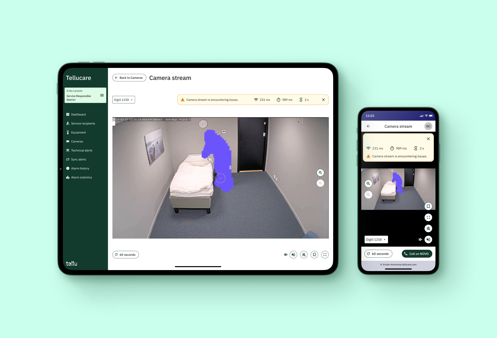

The showcase gives examples of the kind of design output I produce, without going too much into details.
Redesign of video player for Tellu
The video player is used by nurses and operators to follow up on alarms.
Therefore, the redesign needed to be clean, focused and intuitive.

Event based supervision with TCAP
This video sketch shows how video supervision in nursing homes might look like with Tellu TCAP, a software, which was still under construction.
This video formed a model for the further development of the software.
Speed Dogs
Getting children interested in robotics through interactive play.
Project with Theodore Vange.
Muimo
Inspiring elderly to move using musical objects.
Project with Vilde Louise Jerpseth, Vegard Hartmann and Thomas Wang.
Autotrophic Humans / Solar Mesh
What if, in a 100 years, humans did not have to eat to survive?
Speculative design, exploring radical futures through video evidencing.